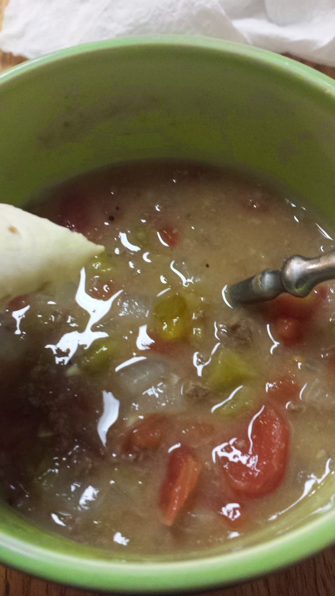

Southern Colorado Green Chili

Description
Southern Colorado Green Chili is a hearty, slow-simmered stew with infinite variety. Most often, Green Chili begins with some sort of cooked pork. Grilled? Pan fried? Smoked? Sure. Just make sure you use Pueblo or Hatch green chiles!
Ingredients
- 1 large or 2 small onions DICED
- 5 large cloves of garlic DICED
- 3 tbsp toasted flour
- 1 lb stew pork
- 1 small can or 1/2 large can of crushed tomatoes
- 1 qt bag of roasted, peeled, de-seeded green chile DICED
- 1 qt chicken stock
- salt & pepper to taste
- 1 tsp cumin
- water
Directions
- Over medium heat, brown pork in a 3qt stock pot with a little vegetable oil to keep the meat from sticking. Use a generous amount of salt and pepper to season.
- Add in onions and garlic. Cook until translucent.
- Add flour to coat.
- Add tomatoes, chicken stock, then green chile.
- Add 1 to 2 cups of water to reach desired consistency. Bring to a boil.
- Add salt, pepper, and cumin to taste.
- Simmer for at least 10 minutes